# 图像基本知识
# 常用成像设备
CCD（电荷耦合器件）
Charge-coupled Device，不需要扫描，就能形成二维图像。
CMOS（互补金属氧化物半导体）
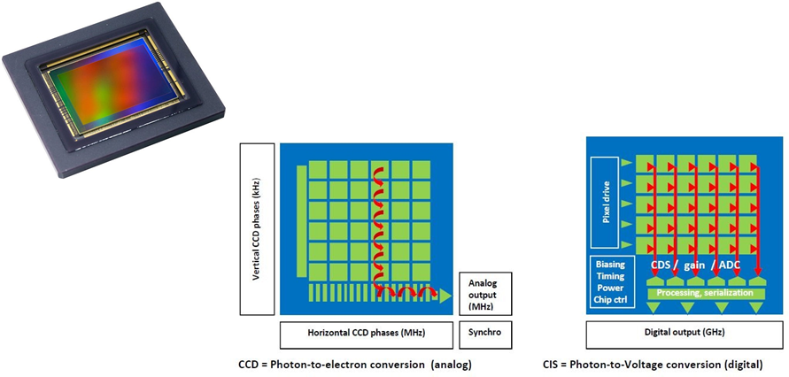
# 像素的位深度
日常用相机的位深度为8
一般认为，典型条件下人类视觉的归一化灵敏度约为1/256
HDR10 (high dynamic range) 显示器对应的显示像素深度为10
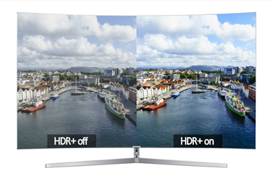研究用相机的像素位深度可达16
| Bit Depth | Dynamic Range |
|---|---|
| 8 | 0~255 |
| 10 | 0~1023 |
| 12 | 0~4095 |
| 16 | 0~65535 |
# 图像采样与量化
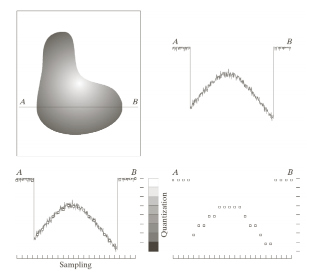图像数字化：将模拟图像经过离散化之后，得到用数字表示的图像。图像的数字化包括取样和量化两个过程。
取样：是将在空间上连续的图像转换成离散的采样点 （即像素）集的操作。即：空间坐标的离散化。
空间采样与量化由物理像素决定
量化：把取样后所得的各像素的灰度值从模拟量到离散 量的转换称为图像灰度的量化。即：灰度的离散化。
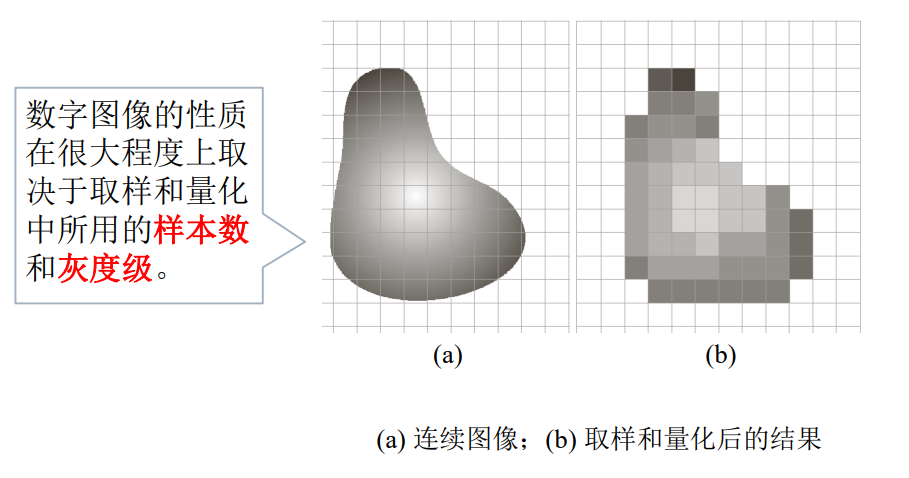 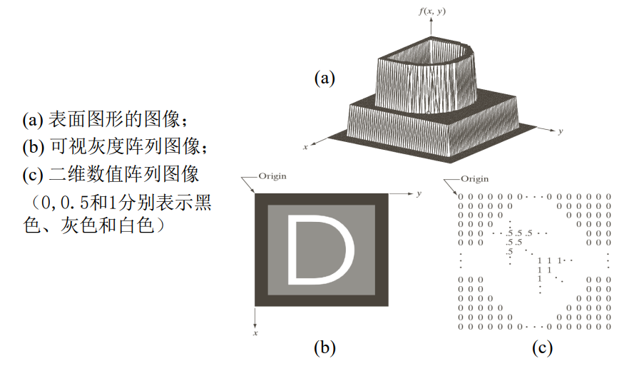 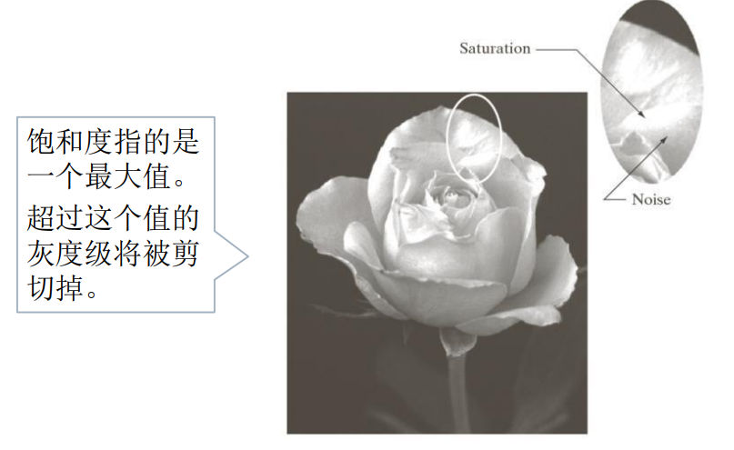灰度采样与量化由模拟-数字转换决定
# 图像的空间分辨率和灰度分辨率
空间分辨率
图像空间中可分辨的最小细节。一般用单位长度上采样的像素数目或单位长度上的线对数目表示。
例如，举一个质量概念，报纸用75dpi的分辨率来印刷， 杂志是133dpi，光鲜的小册子是175dpi，您正在看的书 是以2044dpi印刷的。
空间分辨率的度量必须针对空间单位来规定才有意义。
空间分辨率与图像质量的关系：空间分辨率越高，图像质量越好；空间分辨率越低， 图像质量越差，会出现棋盘模式。
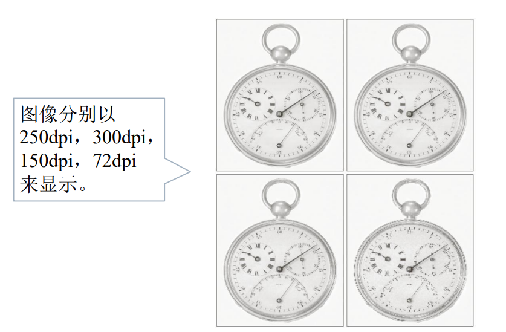灰度分辨率
图像灰度级中可分辨的最小变化。一般用灰度级或比特数表示。灰度级数通常是2的整数次幂。最 通用的是8比特。通常说一幅被量化为256级的图像有8比特的灰度分辨率。
灰度分辨率与图像质量的关系：灰度分辨率越高，图像质量越好；灰度分辨率越低， 图像质量越差，会出现虚假轮廓。
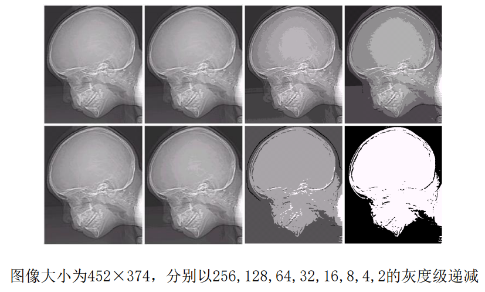
空间分辨率和灰度分辨率同时变化，对图像质量的影响：图像细节含量由少到多，同时改变空间分辨率和量化级， 要求观察者按照主观质量进行排序。
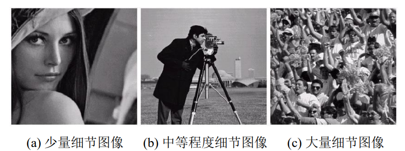# 图像内插
内插是用已知数据来估计未知位置的数值的处理。
插值方法：
- 最近邻内插
- 双线性内插
- 双三次内插
# 像素间的基本关系
相邻像素
4领域
坐标为 的像素p有4个水平和垂直的相邻像素， 坐标分别为: ，这个 像素集称为p的4邻域，用表示。
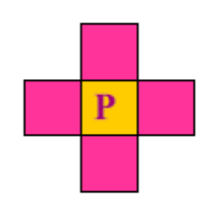对角领域
坐标分别为: ， 用表示。
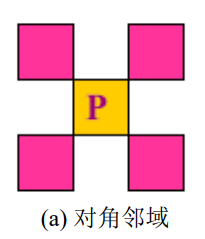8领域
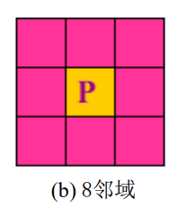
邻接性，连通性，区域和边界
邻接性
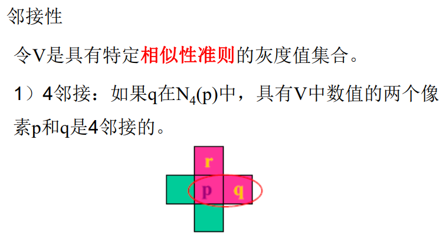 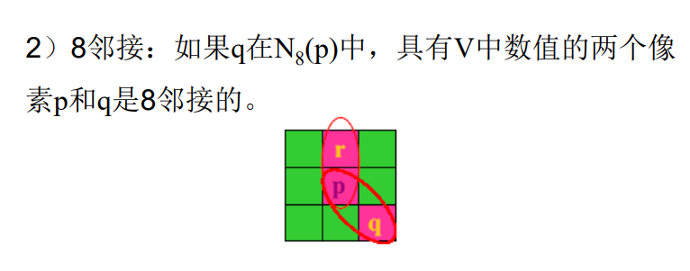
连通性
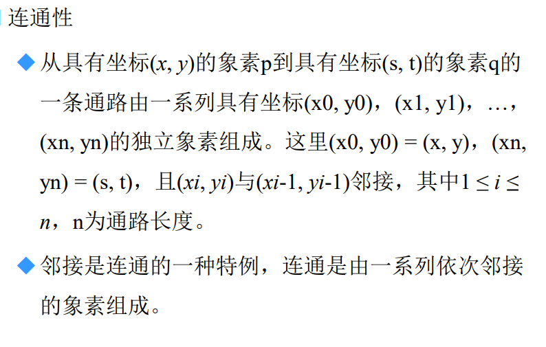区域
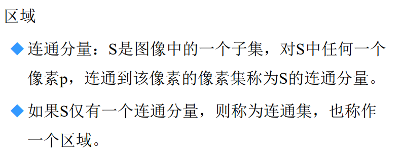边界
距离度量
- 欧式距离
- 城市距离
- 棋盘距离
# 图像间基本数学运算
对应元素运行和矩阵运算
线性运算与非线性运算
算术运算
- 相加
- 相减
- 相乘
- 相除
集合运算和逻辑运算
- 集合
- 逻辑
空间运算
- 单像素运算
- 领域运算
- 几何空间变换
- 图像配准
# 线性系统
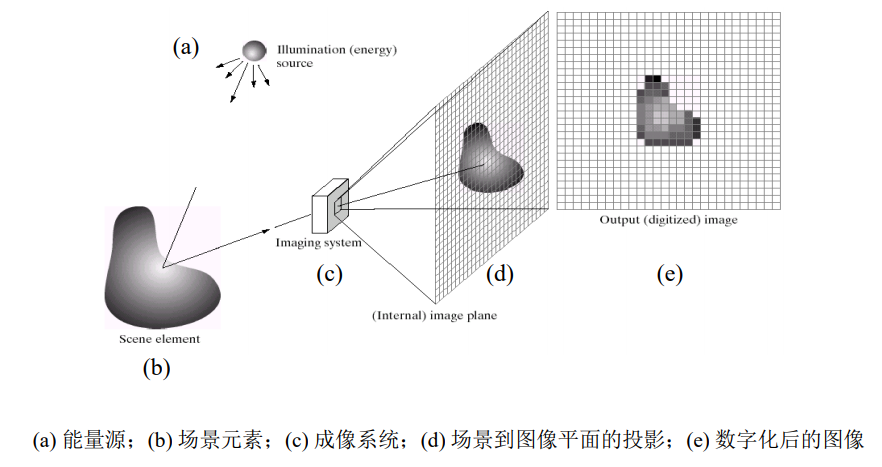在成像阶段内，考虑在场景元素的各种形状不一，此处可以统一抽象为其由单个点组成。该单个的点作为输入，经过线性系统，即可输出数字点。
With reference to the following figure, we define a system as a unit that converts an input function f(x) into an output (or response) function g(x), where x is an independent variable, such as time or, as in the case of images, spatial position. We assume for simplicity that x is a continuous variable, but the results that will be derived are equally applicable to discrete variables.
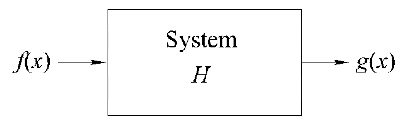线性系统两个性质：
- additivity（可加性）
- homogeneity（齐次性）
利用这两个性质，可将用以下方式表达线性系统
对于单位脉冲，线性系统为狄拉克函数，则可定义为
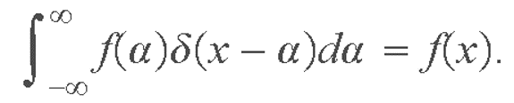由additivity和homogeneity，可对线性系统表达为：
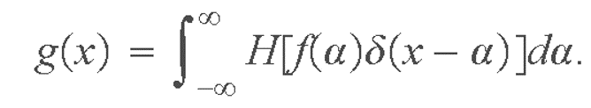 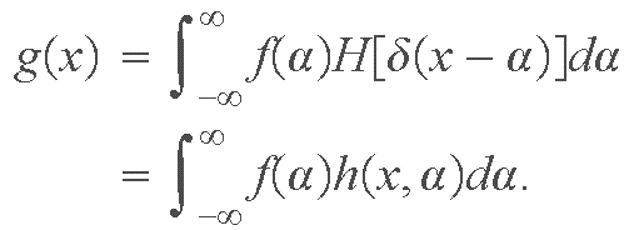The term
is called the impulse response of H. In other words, h(x, a) is the response of the linear system to a unit impulse located at coordinate x (the origin of the impulse is the value of a that produces d(0); in this case, this happens when a = x).
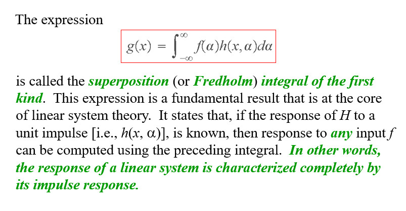 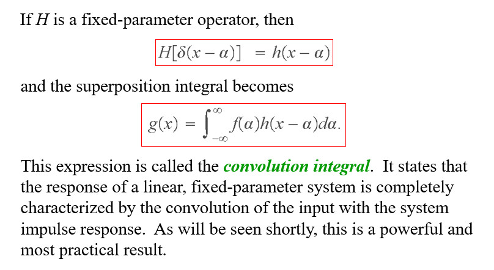该线性系统最终表达即是卷积表达，也就是图像成像过程，其实也可以理解为卷积过程。
另一个清晰的推导，可以参考图像复原与重建内容中的图像去模糊关于图像退化模型部分。
补充——卷积理解
卷积的数学定义：
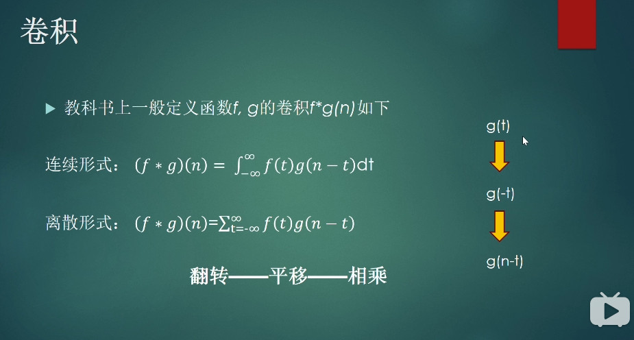
# 彩色图像处理
选择某个彩色模型：
RGB模型：光的（加性）原色与二次色
适用于显示
CMY和CMYK模型：颜料的（减性）原色与二次色
CMYK：适用于打印
CMY：实现浅色
HSI模型
通常根据不同的知识和应用来表达颜色图像
伪彩色变化：灰度图像转换为伪彩色图像
# 基本图形处理工具
Adobe Photoshop
主要用于光栅（raster）图像（像素图像）编辑，图形设计和数学美术。
主要使用图像层（layering)来设计与编辑的功能
主要格式是.PSD(photoshop document)，支持3万*3万像素图像，最大2GB
大文件格式 .PSB
主要功能：像素编辑，图像校正，图像滤波，三维设计，简单视频编辑
常用功能：图像格式转换，图像文件大小调整，图像亮度，对比度和彩色调整，基本图像处理（滤镜功能），排版图设计，图像打印
易用性较好但编程功能有限
Adobe IIIustrator
- 用于矢量图设计
- 可通过便利的图形缩放，颜色修改等
- 可使用EPS图形格式
- 复杂几何造型功能有限
OpenCV
- 历史：
- 早期Inter支持，2000年6月CVPR首发
- 正式版1.0于2006年发布
- OpenCV2于2009年10月发布
- 2012年8月成立OpenCV.org
- 提供基本图形处理功能
- 主要功能
- 物体识别
- 跟踪
- 物体几何重建
- 支持Python，Java和MATLAB接口
- 支持深度学习框架TensorFlow，Torch/PyTorch
- 历史：
PIL/Pillow
- 基本图像操作
- 图像增强，滤波
MATLAB图像处理工具箱
MATLAB计算机视觉工具箱
程序读写图像
MATLAB图像读写与显示
读写：imread，imwrite
显示：imshow
OpenCV图像读写与显示
# 图像噪声模型
# 噪声的概念
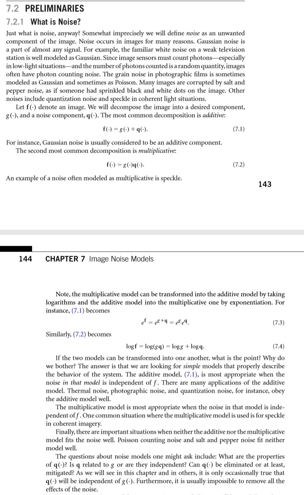加性噪声（additive noise)：
乘性噪声（multiplicative noise）：
乘性噪声可以通过对数变换，转为加性噪声
一个图像是可能同时受到多种噪声的影响
# 噪声的类型
基于噪声分量的灰度值的统计特性，可以认为噪声是由概率密度函数表征的随机变量。
按照概率密度函数的类型，可将噪声分为以下几种：
高斯噪声
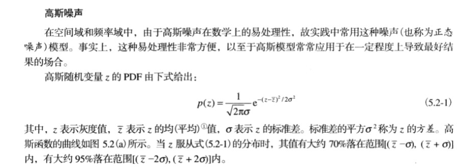 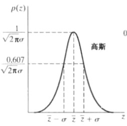来源：背景噪声（dark noise），放大器噪声（amplifier noise）
椒盐噪声
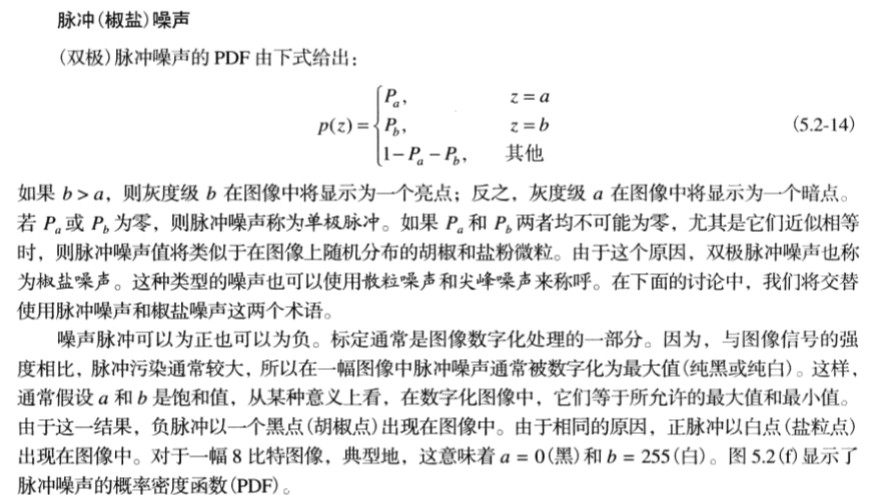 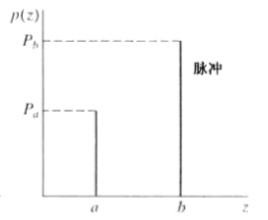来源：传输噪声（transmission noise）
Poisson噪声
由于光子本身不稳定
瑞利噪声
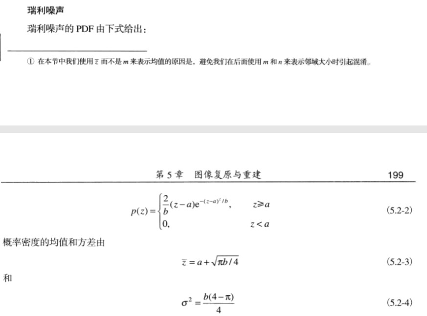 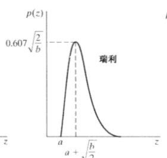伽马噪声
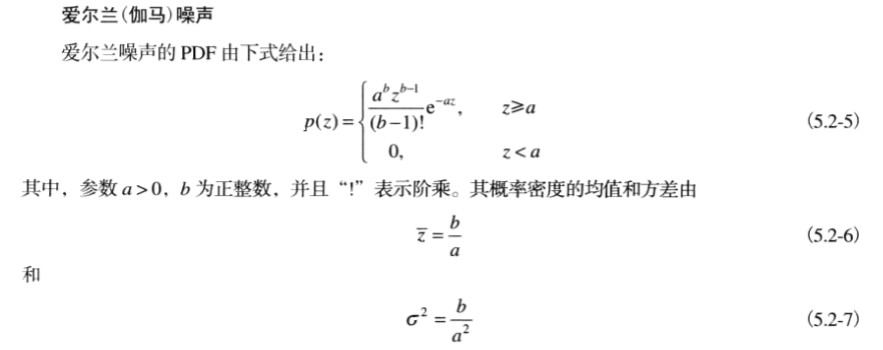 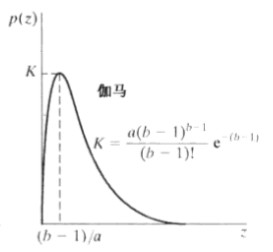指数噪声
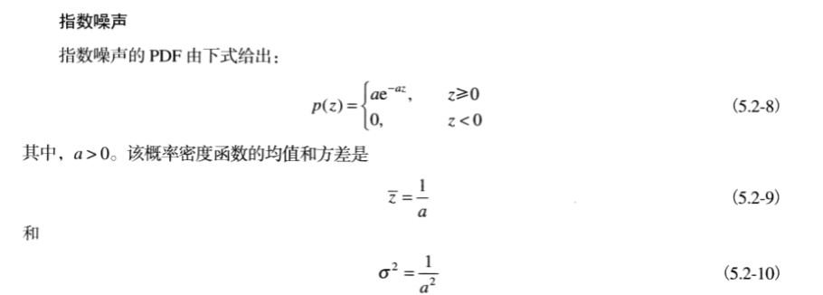 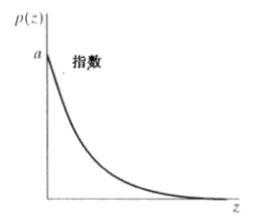均匀噪声
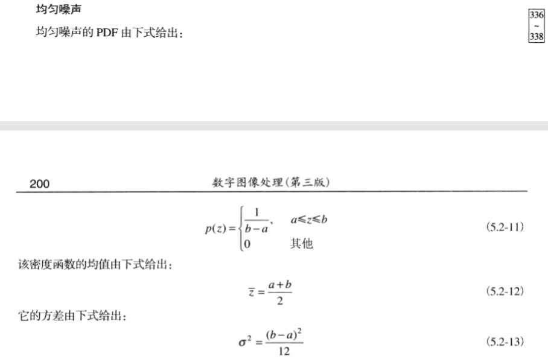 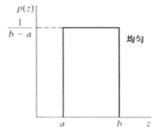
图像噪声模型，也可以参考图像复原与重建中的图像去噪声部分。